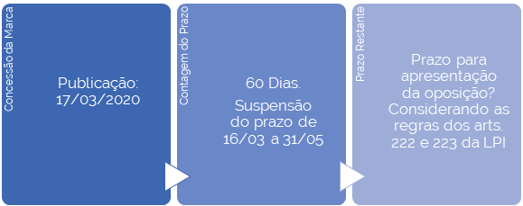
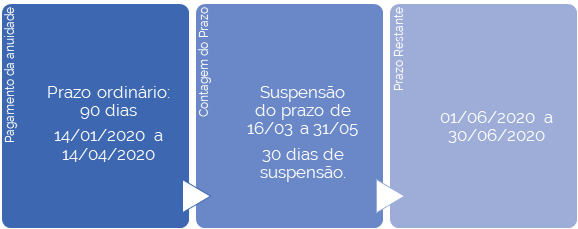
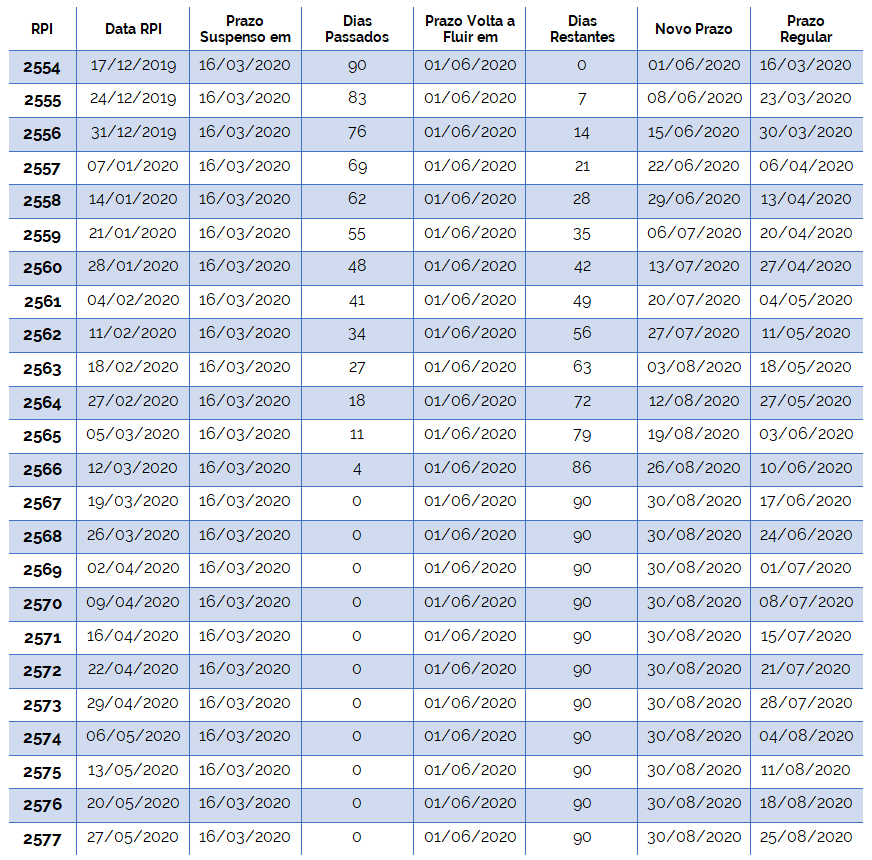

O INPI prestou esclarecimentos sobre a Portaria INPI/PR nº 120, de 16/03/2020, por meio de
comunicado divulgado em seu portal em 24/03/2020, cujo conteúdo encontra-se reproduzido abaixo:
“Diante da epidemia do novo coronavírus, o INPI vem adotando medidas que visam a manter as atividades do Instituto com qualidade e sem prejuízo aos usuários. Nesse sentido, foi adotada a suspensão dos prazos entre os dias 16/03 e 14/04/2020. Primeiramente, é importante dizer que a medida está amparada no artigo 67 da Lei nº 9.874/99, que regula o processo administrativo no âmbito da Administração Pública Federal, e pela Portaria INPI PR nº 120, de 16 de março deste ano.
Dessa forma, seguem alguns esclarecimentos sobre a iniciativa do Instituto para sanar as dúvidas dos usuários. Um dos pontos diz respeito à extensão da Portaria. Ela se aplica a todos os processos em trâmite no INPI, independentemente de sua natureza. Portanto, os prazos estão suspensos para todos os casos.
A Portaria implica também a paralisação da contagem dos prazos que estiverem em curso, que voltarão a fluir pelo tempo remanescente ao fim do período de suspensão. Ou seja, a contagem do prazo será retomada de onde havia parado.
Assim, no caso da Portaria INPI PR nº 120, os prazos retornarão a transcorrer a partir do dia 15 de abril de 2020. Isso não significa que vencerão no dia 15 as publicações ocorridas no período da suspensão, nem os prazos que já estavam em curso na época da edição da Portaria.
Esclarecemos ainda que o uso da suspensão de prazo é opcional. Não há qualquer impedimento, por exemplo, de o usuário peticionar no INPI, por meio dos sistemas on-line, a fim de cumprir uma exigência, ainda que o prazo esteja suspenso. Neste caso, a Administração dará prosseguimento ao processo normalmente.
Em resumo, o fim da suspensão terá duas hipóteses na contagem de prazos:
a) Os prazos em curso na data da edição da Portaria voltarão a contar pelo prazo remanescente;
b) Os prazos que tiverem início no período abarcado pela suspensão iniciarão a sua contagem a partir do dia 15/04. (leia-se 1º de junho)
Reiteramos que a Portaria INPI/PR nº 120 teve a intenção de facilitar os atos dos requerentes junto ao INPI neste momento excepcional que o Brasil e o mundo estão atravessando”.
A suspensão dos prazos inicialmente estabelecida na Portaria INPI/PR nº 120 foi prorrogada pelas Portarias INPI/PR nº 161/2020 (de 15/04 a 30/04), nº 166/2020 (de 01/05 a 15/05) e nº 179/2020 (de 15/05 a 31/05). A notícia de retomada da contagem dos prazos a partir de 01/06/2020 pode ser acessada
aqui.
Ainda não há posicionamento institucional definitivo quanto à aplicação da suspensão dos prazos às prioridades unionistas e como será feito no âmbito de depósitos realizados pela via nacional.
Em posicionamento preliminar, a Diretoria de Marcas, Desenhos Industriais e Indicações Geográficas entende que se aplica às prioridades unionistas a mesma repercussão aos demais prazos, contida nos itens a) e b) da resposta à 1ª questão, qual seja:
“Em resumo, o fim da suspensão terá duas hipóteses na contagem de prazos:
a) Os prazos em curso na data da edição da Portaria voltarão a contar pelo prazo remanescente;
b) Os prazos que tiverem início no período abarcado pela suspensão iniciarão a sua contagem a partir do dia 15/04” (leia-se 1º de junho)
Com relação aos pedidos de patentes depositados via PCT, a Diretoria de Patentes, Programas de Computador e Topografias de Circuitos Integrados apresenta as seguintes considerações com relação a suas fases nacional e internacional e quanto aos pedidos nacionais:
- Fase Nacional
• Prazo para a entrada na fase nacional dos pedidos de patentes depositados via PCT
Prazo de 30 meses para requerer a entrada na fase nacional brasileira (Art. 22 do Tratado PCT), a contar da data de prioridade mais antiga do pedido do país de origem (se houver) ou a data de depósito do pedido PCT num Escritório Receptor, quando não há reivindicação de prioridade.
A suspensão dos prazos se aplica ao prazo dos 30 meses. Não é necessário recolher o restabelecimento de direito para entrada na fase nacional (GRU 271), basta o requerente mencionar a título de esclarecimento no corpo da petição de requerimento de entrada (GRU 200) que o prazo de “30 meses” está atendido tendo em vista as suspensões de prazo previstas nas Portarias acima elencadas, conforme o caso em espécie.
• Prazo de 60 dias para exigência formulada no exame de admissibilidade da fase nacional (publicação na RPI código 1.5)
Aplica-se a interpretação disponível no portal do INPI.
- Fase Internacional
• Prazo do direito de prioridade para o depósito de pedido internacional PCT realizado no Organismo Receptor brasileiro (INPI) - RO/BR
O prazo de 12 meses do Direito de prioridade está previsto na Convenção de União de Paris – Art. 4º. O Tratado PCT acolhe o direito de prioridade consoante o Art. 8º
Nada na CUP proíbe explicitamente os Estados-Membros de fornecerem medidas especialmente adaptadas para atenuar a perda do direito de prioridade em emergências, além da extensão do período de prioridade até o primeiro dia útil no Art. 4C (3), da Convenção de Paris.
O INPI optou pela suspensão de prazos, incluso o prazo do direito de prioridade, conforme as referidas portarias que suspendem os prazos durante o período de emergência. Em geral, se a contagem do limite de tempo já tiver sido iniciada no início do período de suspensão, a contagem do período restante será retomada, após o período de suspensão, a partir de onde parou. Se o prazo começar durante o período de suspensão, a contagem desse prazo será iniciada após o período de suspensão.
No que se refere ao prazo da prioridade, as alternativas adotadas pelos países da CUP ainda estão sendo objeto de discussão junto à OMPI. Não há dúvidas quanto aos reflexos no PCT; a OMPI instituiu um portal exclusivo sobre este assunto (
COVID-19 IP Policy Tracker), que orienta agentes e organizações de PI do mundo inteiro.
• Prazos para trâmite da fase internacional de pedido internacional já depositado
Para este casos aplica-se a Regra 82 quarte 1 do Regulamento de Execução do PCT seguindo a
orientação prevista no portal da OMPI específico para a COVID – 19.
Finalizando, informamos que durante todo o período das portarias o RO/BR seguindo a orientação da OMPI não está emitindo os formulários PCT/RO/133 (pagamento em atraso) e PCT/RO/117 (retirada por falta de pagamento).
-Pedidos Nacionais:
Prazo de 12 meses para realizar o depósito no Brasil, a contar da data de prioridade mais antiga do pedido no país de origem (se houver).
Quanto ao prazo de 12 meses, entende-se o mesmo como suspenso da mesma forma que os outros. Observamos que o ideal é não deixar para apresentar o pedido/petição/pagamentos no final do prazo, mesmo o suspenso.
Sim, a suspensão dos prazos se aplica tanto para a prorrogação de vigência de registro de marca quanto para a apresentação de oposição a pedido de registro.
Exemplo prático: PRAZO PARA OPOSIÇÃO: ART. 158 LPI

No exemplo apresentado, a publicação de pedido de registro (notificação para apresentação de oposição) que ocorresse em 17/03/2020 já estaria dentro do período de suspensão (se iniciou em 16/03/2020, com a Portaria 120). Portanto, o prazo de 60 dias iria começar a contar a partir de 1º de junho, findando em 30 de julho.
Outros exemplos:
. Pedido publicado para oposição em 07/01/2020 (RPI 2557): 60º dia em 07/03, um sábado, e, portanto, vencimento em 09/03 (primeiro dia útil seguinte). Considerando que o vencimento se deu antes do início da suspensão (16/03), prazo não foi afetado.
. Pedido publicado para oposição em 14/01/2020 (RPI 2558): 60º dia do prazo cairia em 14/03/2020, que é sábado, logo, dia do vencimento seria 16/03/2020, que é o 1º dia de suspensão. Portanto, o prazo foi suspenso faltando um dia para seu termo final. O prazo retomará sua contagem e se encerrará, assim, dia 1º de junho, segunda-feira.
. Pedido publicado para oposição em 21/01/2020 (RPI 2559): contagem do prazo suspensa no 55º dia, que seria 16/03. Logo, dia 1º de junho será o 55º dia, com o 60º dia caindo no sábado, dia 06 de junho. Logo, vencimento no primeiro dia útil seguinte, 08 de junho, segunda-feira.
. Pedido publicado para oposição em 28/01/2020 (RPI 2560): contagem do prazo suspensa no 48º dia, que seria 16/03. Logo, dia 1º de junho será o 48º dia, com o 60º dia caindo no dia 13/06, um sábado – portanto, dia do vencimento será 15/06, segunda-feira.
Daí em diante. O mesmo vale para outros prazos, como prorrogação, etc.
Nesse mesmo sentido, a suspensão dos prazos se aplica para a anuidade de patentes, cujos prazos de pagamento também foram suspensos.
Exemplos práticos:
EXEMPLO 1 - PRAZO PARA PAGAMENTO DA ANUIDADE: ART. 84 LPI

Exemplo 1 - Prazo ordinário acabou dentro do período da suspensão (16/03 a 31/05).
. Prazo ordinário (3 meses) da anuidade: 14/01/2020 a 14/04/2020.
. Prazo interrompido em 16/03, faltando 30 dias para acabar o prazo ordinário.
Logo, esse período restante de 30 dias será retomado a partir de 01/06/2020, estendendo o prazo ordinário para pagamento até 30/06/2020.
EXEMPLO 2 - PRAZO PARA PAGAMENTO DA ANUIDADE: ART. 84 LPI
Exemplo 2 - Prazo ordinário iniciado dentro do período da suspensão (16/03 a 31/05).
. Prazo ordinário (3 meses) da anuidade: 20/03/2020 a 20/06/2020.
. Uma vez que o início do prazo ordinário se deu dentro do período de suspensão, o referido prazo de 3 meses começará a contar a partir de 01/06/2020, ficando da seguinte forma:
. Prazo ordinário (3 meses) da anuidade: 01/06/2020 a 01/09/2020.
No âmbito da Diretoria de Marcas, Desenhos Industriais e Indicações Geográficas, ainda que a lógica tenha sido dar andamento aos processos administrativos no limite do possível, nem sempre isto foi viável.
Primeiramente, em função da forte redução da demanda. Os depósitos de pedidos de registro de marca caíram, em abril e maio, a grosso modo, em torno de 30%, se comparado com os mesmos meses do ano passado.
Evidentemente, a redução da demanda não decorreu da suspensão dos prazos (os usuários puderam continuar peticionando normalmente), mas do cenário decorrente da COVID-19.
Em segundo lugar, a suspensão de prazos afetou a análise de petições de cumprimento de exigência: com o prazo suspenso, e sem o peticionamento, não há exame.
O mesmo vale para exames de pedidos: com o prazo de oposição suspenso, não há como se examinar. Considerando que o estoque de pedidos da DIRMA é pequeno, e que o backlog foi praticamente exterminado, uma eventual continuidade da suspensão dos prazos poderia praticamente paralisar os exames de pedidos.
Para a Diretoria de Patentes, Programas de Computador e Topografias de Circuitos Integrados, o único impacto diz respeito à suspensão de arquivamentos e arquivamentos definitivos, diminuindo o número de decisões em patentes no período. Entretanto, o exame de pedido de patentes seguiu normalmente, com o andamento do Plano de Combate ao Backlog e as publicações das exigências preliminares. Além disso, a análise das respostas apresentadas também estava sendo realizada normalmente, com publicações de deferimentos e indeferimentos.
A princípio, não. O BuscaWeb migra dados de sistemas internos que não comportam a inserção de comando relativo à atualização da contagem de prazos.
Apresentamos, a seguir, uma tabela geral de prazos para melhor orientar os usuários:
